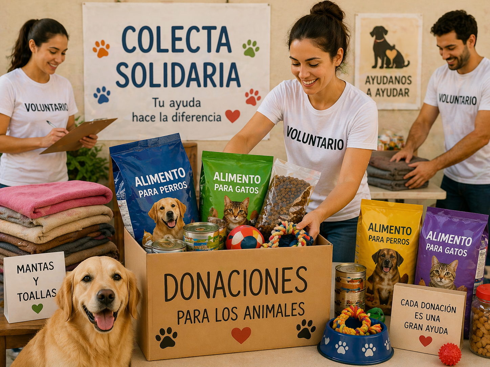

Nuestros Programas e Iniciativas
En Patitas Unidas trabajamos diariamente a través de diversos ejes estratégicos para mejorar la calidad de vida de los animales en situación de vulnerabilidad.
Programa de Adopción Responsable y Seguimiento

Descripción: Esta iniciativa tiene como objetivo principal transformar la vida de nuestros animales rescatados encontrándoles hogares definitivos y amorosos. El proceso incluye entrevistas previas para asegurar la compatibilidad entre el animal y la familia. Además, realizamos un acompañamiento post-adopción constante para brindar asesoramiento sobre salud y comportamiento, garantizando que la transición sea exitosa para todos.
Dirigido a:
- Grupos familiares responsables.
- Personas con tiempo para la socialización.
- Hogares que busquen un nuevo integrante.
¿Cómo participar?: Si estás interesado en darle un hogar a uno de nuestros animales, podés iniciar el proceso aquí:
Quiero participar de este programa
Campañas de Castración y Salud Preventiva

Descripción: Entendemos que la castración es la única herramienta ética y eficaz para controlar la sobrepoblación y evitar el abandono. Nuestras campañas ofrecen cirugías de esterilización gratuitas en zonas vulnerables, junto con jornadas de vacunación antirrábica y desparasitación. De esta forma, no solo protegemos a los animales, sino que también promovemos la salud pública en toda la comunidad.
Dirigido a:
- Vecinos con mascotas a cargo que no cuenten con recursos económicos.
- Rescatistas independientes que actúan en barrios vulnerables.
- Dueños de animales que necesiten completar el esquema de vacunación.
¿Cómo participar?: Para solicitar un turno o consultar próximas fechas, hacé clic en el enlace:
Quiero participar de este programa
Red de Colectas Solidarias

Descripción: Este programa es el corazón logístico de nuestra organización. Se encarga de gestionar la recepción y distribución de recursos críticos, desde raciones de alimento balanceado de alta calidad hasta mantas, abrigos e insumos médicos complejos. Gracias a la solidaridad de la gente, logramos mantener las instalaciones del refugio en condiciones dignas para cada habitante.
Dirigido a:
- Toda la comunidad que desee colaborar con recursos materiales.
- Empresas locales interesadas en realizar donaciones de insumos.
- Voluntarios que puedan ayudar con la logística y el transporte.
¿Cómo participar?: Si tenés insumos para donar, avisanos completando tus datos en el formulario:
Quiero participar de este programa